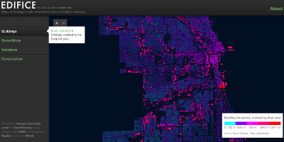

Hackathon izazovi
Na hakatonu održavamo tehničke civilne izazove s naglaskom na povezivanje timova koji mogu riješiti probleme. Ovo su neke ideje na kojima radimo. Do natjecanja mogu se pojaviti i nove ideje - pozivamo i tebe da predstaviš svoje ideje na našem Hackbooku. Na ovoj stranici možeš pogledati izazove u 2014. godini.
Otvoreni formati javnih registara
Radi zajedno s gradom ili lobiraj za otvorene podatke o javnim registrima te za otvoreni pristup i otvorene formate, npr XML registar poreznih dužnika. Slika W3.org
Otvoreni incidenti

Radi s policijom i novinarima i pomozi da se podaci o kriminalu jednostavnije pronađu.
Otvoreni proračuni

Osmisli plan kako uključiti građane u Otvoreni proračun. Smisli novo sučelje za Otvoreni proračun i lobiraj da i drugi gradovi otvore svoje proračunske podatke na isti način.
Otvorena imovina
Radi s gradom i županijom da objave otvorene podatke o imovini u gradu Zagrebu. Sagradi internetsku aplikaciju za otvorenu evidenciju gradske ili državne imovine poput Edifice ili smisli novo sučelje za podatke Otvorene imovine.
Web app za aktivnu participaciju
Osmisli i sagradi aplikaciju putem koje građani mogu dati svoje mišljenje.
Otvorena sanitarna inspekcija
Pomozi građanima da lakše dođu do podataka javne sanitarne inspekcije.
Knjižnica kao platforma
Potakni uporabu otvorenog koda u knjižnicama. Smisli kreativnu primjenu aplikacije otvorenog koda u knjižnicama. Pogledaj Centar za otvoreni kod Nacionalne sveučilišne knjižnice.
Otvoreni standardi u prijevozu

Radi s javnim gradskim prijevozom ili lobiraj za otvaranje podataka o prijevozu korištenjem otvorenih normi. Osmisli i sagradi aplikaciju za unapređenje javnog prometa poput HRTb.us. Koristi prometne informacije i javne podatke za poboljšanje urbanističkog planiranja.